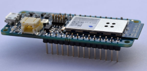
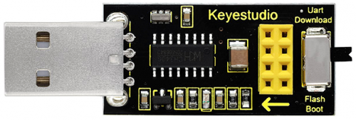
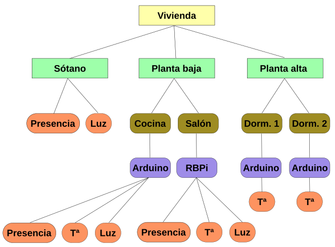

Teoría básica de IoT
¿Qué es la Internet de las Cosas?¶
La expresión “Internet de las cosas” o IoT (del inglés, Internet of Things), internet de todas las cosas o internet en las cosas, hace referencia al uso que hacen de Internet los dispositivos conectados (las cosas) para comunicarse sin intervención humana directa. También se usa el término IoT para referirse al conjunto de estos dispositivos conectados comunicando “entre máquinas” (M2M) sin requerir interacción humana. No existe una Internet especial o diferente para “las cosas”, en principio, se opera con las mismas redes que en otros usos de Internet. En la imagen siguiente se grafica la conexión de elementos con la nube a través de la red.

Conexión de elementos IoT con la nube
El IoT sirve para monitorización y control electrónico y toma de decisiones inteligente. Es decir, conectar dispositivos a Internet permite enviar y recibir información usando una infraestructura global y así poder monitorizar y/o controlar automáticamente y a distancia multitud de contextos. Por ejemplo, en entornos urbanos (ciudades inteligentes) se puede conocer la actividad humana, del medio ambiente, del tráfico… tanto para informar de su estado (como las plazas de aparcamiento disponibles, la densidad o velocidad de la circulación, la contaminación…) como para tomar decisiones de forma manual o automática para optimizar los recursos disponibles (iluminación, riego de jardines, funcionamiento de los semáforos…)
Trabajo con placas tradicionales¶
Para conectar a la red las placas tipo Arduino, sus clones o basadas en el mismo usaremos los módulos ESP8266. El ESP8266 es un chip de bajo costo Wi-Fi que contiene su propio microcontrolador, un Tensilica L106 de 32-bit. Es un chip de bajo bajo coste y reducido tamaño. El chip ESP8266 forma parte de multitud de módulos comerciales a través de diferentes soluciones con distintas funciones, pines, tamaños y precios.

Modelos ESP
El más simple es el ESP-01, que solo dispone de 2 puertos digitales y necesita un adaptador USB para poder ser programado. Hay otros muchos sistemas como por ejemplo la placa ESP32 STEAMakers, ESP-12E de ESP8266, la placa de desarrollo NodeMCU, también basada en el ESP-12E, Además, hay placas con WiFi que usan otros chip WiFi diferentes, como la Arduino MKR1000.
| ESP32 STEAMakers | ESP-12E |
|---|---|
 |
 |
| NodeMCU de Keyestudio | Arduino MKR1000 |
 |
 |
{kind=link}
Módulo ESP8266 ESP-01¶
Introducción¶
El módulo WiFi ESP-01 es uno de las más populares y económicos, pese a no ser el más potente ni versátil. Actualmente, otros modelos como la ESP-12 o el el ESP32 se están integrando en la mayoría de placas de desarrollo, cobrando un peso e importancia mucho mayor. Sin embargo, podemos asociar nuestro pequeño ESP-01 a, por ejemplo, una placa UNO, con el único fin de darle conectividad WiFi.
El ESP-01 trae instalado una versión de firmware con la que podemos comunicarnos con el ESP8266 mediante comandos AT (veremos a continuación algunos de ellos) a través del puerto serie. Este tipo de comunicación nos va a permitir crear un puente entre la placa TdR STEAM y el ESP8266, consiguiendo así conectar a una red WiFi y dar un primer paso de gigantes en el mundo IoT.
Veamos el aspecto del ESP-01 y algunas de sus características:
| Imagen ESP-01 | Descripción |
|---|---|
 |
- ESP8266 es el microcontrolador del módulo ESP-01. - La memoria flash es la BG25Q80A - Los LEDs informan de si está encendido o no y de la transmisión de datos (Tx y Rx). - La antena WiFi para la conexión a una internet. - Los pines permiten conectar alimentación, sensores, … Toda la información en el datasheet del fabricante |
Los pines están distribuidos de la siguiente forma:
| Pines ESP-01 | Descripción | |
|---|---|---|
 |
1 - GND 2 - Pin digital número 2 3 - Pin digital número 0 4 - RXD es el pin por donde se van a recibir los datos del puerto serie. Trabaja a 3,3 V. También puede ser el pin digital GPIO3 5 - TXD es el pin por donde se van a transmitir los datos del puerto serie. Trabaja a 3,3 V. También puede ser el pin digital GPIO1 |
6 - CH_PD es el pin para apagar y encender el ESP-01: si lo ponemos a 0 V (LOW) se apaga, y a 3,3 V (HIGH) se enciende. 7 - RESET pin a 0V resetea el ESP-01 - Vcc es el pin de alimentación. Funciona a 3,3V y admite un máximo de 3,6 V. La corriente suministrada debe ser mayor que 200 mA. |
GPIO (del inglés, General Purpose Input Output) son entradas o salidas de propósito general, o sea pines digitales.
El ESP-01 soporta comunicación I2C, por lo que, pese a tener solo un par de GPIOs, podemos conectarle multitud de sensores y actuadores a través del mencionado bus de datos I2C.
Programación¶
El ESP-01 dispone de un microcontrolador y una memoria donde poder almacenar programas, luego es un dispositivo programable en si mismo. Cargar programas en el dispositivo es algo mas complejo de lo que hemos visto hasta ahora dado que tiene dos modos de operación, el modo flash o de ejecución y el modo UART o de grabación y debemos ser nosotros quienes activemos un modo u otro, cosa que hasta ahora el entorno ArduinoBlocks ha sido el encargado de hacerlo. Los modos de operación se configuran a través de los puertos GPIO0 y GPIO2.
Para programar el ESP-01 hay que usar los pines Rx y Tx para transmitir los datos a la memoria Flash, donde se almacenará el sketch o programa.
En las placas de control los pines Rx y Tx están en los pines D0 y D1 respectivamente y también son los que se utilizan para cargar programas a una velocidad de 115200 baudios, así que si estos pines los ocupamos con el ESP8266 no podremos cargar programas en nuestra placa. Ahora bien, es posible utilizar otros pines para usar WiFi y evitar este problema, pero el resto de pines digitales solamente trabajan a 9600 baudios y el ESP-01 por defecto viene a 115200, luego para utilizarlo en pines distintos a los D0 y D1 de la placa tendremos que reprogramarlo para que la velocidad sea de 9600 baudios.
Aunque sea bastante técnico debemos exponer cómo configurar los dos modos de funcionamiento de forma breve.
-
Modo de funcionamiento UART. Para cargar un programa en el ESP-01 debemos o bien encenderlo o bien resetearlo pero teniendo los siguientes estados de pines:GPIO0 = 0 (nivel bajo o LOW = 0 V).
-
GPIO2 = 1 (nivel alto o HIGH = 3,3 V = Vcc).
- Recordemos siempre que el ESP8266 trabaja con niveles lógicos de 3,3 V.
El pin GPIO2 está por defecto a HIGH, ya que tiene un pull-up interno, por lo que podemos dejarlo simplemente desconectado.
-
Modo de funcionamiento Flash. Para ejecutar un programa en el ESP-01 una vez cargado debemos tener la siguiente configuración de pines:
-
GPIO0 = 1
- GPIO2 = 1
Tanto el GPIO0 como el GPIO2 están por defecto a HIGH, ya que ambos tienen un pull-up interno, por lo que podemos dejarlos simplemente desconectados.
En este momento reflexionamos sobre el uso de Rx y Tx ya que si los estamos utilizando para cargar el programa en la placa y GPIO0 y GPIO2 para indicar el modo de trabajo ¿cómo conectamos los sensores y actuadores al ESP-01?. Veamos:
- Rx y Tx los utilizamos para cargar el programa. Una vez finalizada la carga los podemos utilizar como pines de entrada y salida digitales.
- Los modos de trabajo se indican cuando se resetea o reinicia la placa. Una vez que tengamos el modo de ejecución podemos conectar cualquier componente a estos pines.
Los programas los podemos subir a nuestro ESP-01 mediante el IDE de Arduino o por medio de un convertidor USB-serie igual o similar al de la imagen siguiente:

Conversor USB-serial
{kind=link}
Se trata de un escudo o shield para el módulo WiFi ESP-01 que está provisto de un chip conversor de USB a puerto serie, en concreto el CH340G. El proceso de reprogramación con esta placa es bastante sencillo pero requiere de comandos AT que pasamos a introducir antes de continuar.
Comandos AT en el ESP8266¶
El ESP-01 viene por defecto con el firmware AT ai-thinker V0.9.2.4. Los módems venían con un conjunto de comandos que permiten que nos podamos comunicar con ellos para configurarlos y que lo podamos hacer a través del puerto serie de ordenador al que están conectados. A estos comandos se les llama AT (de attention).
Después de cada comando AT, el ESP8266 espera los caracteres especiales de nueva linea
En el enlace tenemos un pdf de la empresa Espressif Systems con el juego de comandos AT para el ESP8266.
En la tabla siguiente damos un resumen de los comandos con una información ampliada de los que mas vamos a usar para la configuración inicial que necesitamos.

Unos comandos AT
Preparación del módulo ESP-01¶
Primero conectamos el módulo ESP8266 a la shield USB-serie y este a su vez a un puerto USB de nuestro ordenador. Nos aseguramos de que el interruptor está en modo Flash Boot.
Entramos en ArduinoBlocks con ArduinoBlocks-Connector en funcionamiento, realizamos un refresco de la lectura del puerto para que detecte a la shield del módulo WiFi si es necesario, abrimos la consola, escogeremos la opción de 115200 en baudrate y también la de NL + LF (NL + LF es igual que CR + LF) para comunicarnos con el módulo WiFi. Hacemos clic en Conectar y conectamos la consola, escribimos “AT” en ella y clic en enviar. La situación es la de la imagen siguiente:

Comando AT en consola arduinoblocks
Si todo es correcto debe respondernos “OK”. Si responde algo sin sentido o no contesta, significa que está configurado en alguna otra velocidad. En este segundo caso deberemos cambiar la opción de baudrate y repetir la operación con diferentes velocidades hasta que nos responda “OK”. La situación correcta en la consola de comandos es la siguiente:

Respuesta al comando AT
Una vez que nos responda “OK”, le enviamos el texto “AT+UART_DEF=9600,8,1,0,0” y nos debe responder otra vez “OK”.

Comando AT para establecer velocidad a 9600 baudios
Con esto hemos cambiado la velocidad a 9600 baudios mediante el comando AT+UART_DEF que nos permite cambiar la definición a 9600 baudios, con 8 bits de datos, 1 bit de parada, sin paridad y sin habilitar el control de flujo.
Una vez que hemos configurado el módulo WiFi a la velocidad que nos interesa debemos crear un canal en un servidor MQTT donde enviar los datos y visualizarlos. Esto lo vamos a hacer a través de la web de Thingspeak, pero antes de nada vamos a describir que es MQTT.
Para saber mas acerca de la reprogramación de la velocidad de comunicación con ESP8266 visita el enlace: Reprogramar la velocidad de comunicación del ESP8266.
Introducción al IoT a través de MQTT¶
Si queremos trabajar en tareas de IoT debemos de utilizar algún protocolo de comunicación y hoy por hoy el principal es MQTT, pero antes de citar protocolos vamos a tratar algunos conceptos necesarios. Un protocolo de comunicación no es otra cosa que una serie de normas definidas para que dos o más dispositivos puedan comunicarse entre si de forma comprensible para ambos.
- Requisitos del IoT
Estamos bastante acostumbrados a realizar un tipo de comunicación denominada M2M (machine-to-machine) utilizando internet, pero cuando trabajamos en IoT debemos establecer una serie de requisitos que hacen que la comunicación M2M no sea la mas adecuada. Algunos de estos requisitos son:
- Cantidad: se puede llegar a tener un gran número de dispositivos diferentes, desde sensores, actuadores, servidores, etc.
- Escalabilidad: los sistemas deben permitir añadir o eliminar dispositivos sin que el sistema global resulte afectado.
- Variedad: normalmente necesitaremos que el sistema funcione con diferentes sistemas operativos, lenguajes de programación y el mayor número posible de dispositivos.
- Simultaneidad: gran cantidad de comunicaciones simultaneas, lo que requiere respuestas rápidas para lo que es necesario que los mensajes transmitidos sean lo mas cortos posibles.
- Seguridad: internet no es un sitio muy seguro y estos dispositivos van a estar conectados a internet controlando dispositivos físicos.
- Accesibilidad: tendremos que trabajar en condiciones muy variadas en lo que se refiere a ancho de banda, firewall, direccionamiento,…
La solución mas común consiste en disponer un servidor denominado ‘broker’, o a veces ‘Router’, que será el que reciba los mensajes de los dispositivos emisores y los distribuirá a los receptores.

Broker
El broker va a tener una dirección IP fija y será accesible para todos los dispositivos, puede mantener un registro de los dispositivos conectados, recibir y distribuir mensajes y establecer filtros de destinatarios. Esto permite algo fundamental, y es que cada dispositivo no dependa del resto de dispositivos.
Veamos algunos conceptos que nos permitan entender las infraestructuras de los servicios IoT:
- Message Queue o cola de mensajes. En este tipo el broker genera una cola de mensajes única para cada uno de los clientes que inician la suscripción.
- Message Service o servicio de mensajería. En este tipo el broker distribuye inmediatamente los mensajes filtrados por algún criterio a los clientes conectados. A diferencia de Message Queue, los mensajes entregados mientras el cliente está desconectado se pierden.
- Publish/Susbcribe (PubSub). Se trata de un sistema de mensajería donde el 'Subscriber' informa al broker de que quiere recibir un tipo de mensajes y el 'Publisher' entonces puede publicarlos.
- Router Remoder Procedure Calls (RRPC). Se trata de la ejecución remota de procedimientos donde 'Callee' comunica al broker que proporciona un procedimiento y el 'Caller', puede llamar a este procedimiento.
Algunos de los protocolos para IoT son:
- MQTT (del inglés Message Queuing Telemetry Transport) es un protocolo PubSub de servicio de mensajería que actúa sobre TCP. Es ligero y fácil de implementar resultando apropiado para dispositivos de baja potencia, tan habituales en IoT. TCP es un protocolo de control de transmisión (del inglés, Transmission Control Protocol) fundamental en Internet.
- AMQP (Advanced Message Queuing Protocol) es un protocolo PubSub de cola de mensajes que asegura la confiabilidad e interoperabilidad necesaria en aplicaciones corporativas.
- STOMP (Streaming Text Oriented Messaging Protocol). Es un protocolo sencillo que emplea HTTP y mensajes de texto.
- XMPP (Extensible Messaging and Presence Protocol). Es un protocolo abierto basado en XML diseñado para aplicaciones de mensajería instantánea.
- WAMP (Web Application Messaging Protocol). Es un protocolo abierto que se ejecuta sobre WebSockets, y provee tanto aplicaciones de PubSub como RRPC.
- CoAP (Constrained Application Protocol) es un protocolo pensado para emplearse en dispositivos de IoT de baja capacidad.
MQTT
Dentro de una arquitectura de MQTT, es muy importante el concepto topic (tema en español) ya que la comunicación se realiza a través de topics debiendo estar los emisores y receptores subscritos a un topic común para poder establecer la comunicación. Este tipo de arquitectura permite que la comunicación pueda ser de uno a uno o de uno a muchos.
Los topics tienen estructura jerárquica pudiendo establecer relaciones padre-hijo de manera que cuando nos suscribimos a un topic padre podemos recibir también la información de sus hijos. En un ejemplo lo podemos ver más claramente.

Estructura jerarquica de un topic
{kind=link}
Un topic se representa mediante una cadena con las jerarquias separadas por /. Por ejemplo:
- Vivienda/Planta baja/Cocina/Arduino/Luz
- Vivienda/Planta alta/Dorm.1/Arduino/Temperatura.
De esta forma podemos suscribirnos a un topic concActividad o a varios, por ejemplo:
- Un topic: Vivienda/Planta baja/Cocina/Arduino/Luz
- Varios topics: Vivienda/Planta baja/#
Existen básicamente tres tipos de brokers, los privados, los públicos y los locales. A continuación citamos alguno de los más utilizados:
a.- Private MQTT Broker: solamente los dispositivos que establezcamos pueden publicar o suscribirse a un topic. Se utiliza en producción y prototipado. Algunos de ellos son:
- Azure de Microsoft.
- AWS de Amazon.
- CloudMQTT disponible en: https://www.cloudmqtt.com/plans.html.
- ThingSpeak de Mathworks (MATLAB).
b.- Public MQTT Broker: cualquier dispositivo puede publicar y suscribirse a topics. Algunos de ellos son:
- Eclipse
- Mosquitto
- HiveMQ: Enlace - Dirección del broker
- Flespi
- Dioty
- Fluux
- Thingspeak
Si queremos instalar nuestro propio broker en una raspberry o PC, sin duda Mosquito es la opción más extendida.
Creación de un canal en un servidor MQTT¶
En nuestro caso vamos a utilizar Thingspeak en su versión pública. Lo primero que debemos hacer es crear una cuenta, para lo que clicamos en Sign Up. Seguidamente, introducimos un correo electrónico válido y el resto de datos que nos pide. Lo vemos en la imagen siguiente:

Pagina inicial de Thingspeaks
Debemos aceptar que use la dirección de correo electrónico para nuestra cuenta de MathWorks, como se ve en la imagen siguiente:

Aceptación a Mathwork
Tras esto recibiremos un correo en la dirección que hemos dado para confirmar la creación de la cuenta y confirmarla. Debemos ver algo similar a la imagen siguiente:

Confirmacion aceptación cuenta correo*
Una vez confirmada la dirección de correo electrónico, volvemos a la página donde estábamos y hacemos click en continuar. Nos pedirá un nombre de usuario y una contraseña que usaremos a partir de ahora para iniciar sesión.
Finalizada la creación de la cuenta iniciamos sesión desde la página principal haciendo clic en “Sign In”. Veremos una ventana como la de la imagen siguiente:

Ventana para identificación en Thingspeaks
Escribimos nuestra contraseña y hacemos clic en el botón Sign in.

Acceso a Thingspeaks
Con esto entramos en el broker y está todo listo para iniciar el trabajo.

Acceso correcto al broker
Podemos aprender mas sobre el tema visitando los siguientes enlaces:
- Primeros pasos con Wifi: Servidor sin clave y contraseña
- Wifi con servidor gratuito con clave y contraseña y app móvil
- Cómo publicar y almacenar datos por Wifi en Internet con Thingspeak
Filtrado por MAC¶
Si por cualquier motivo nuestra red WiFi tiene filtrado MAC debemos de dar de alta en la misma de nuestro dispositivo ESP-01. Esta es una tarea que va a depender de nuestro router y suministrador y que no resulta especialmente complicada. Lo primero que debemos hacer es averiguar la dirección MAC de nuestro dispositivo ESP8266. Esta tarea no la vamos a hacer desde ArduinoBlocks sino que vamos a recurrir al IDE de Arduino.
Si necesitas ayuda para este tema seguro que la encuentras en estos tutoriales de Luis Llamas, o también puedes buscar información en tu navegador pues existen multitud de páginas referentes al tema de programación desde el IDE de Arduino.
Crear un canal en Thingspeak¶
Iniciamos sesión en Thingspeak y sos dirigimos a "Channels" para mostrar "My Channels" si no estamos ya en esa ventana. Nos aparecerá la opción "New Channel":

Acceso a My Channels en Thingspeak
Elegimos un nombre para el canal, activamos los campos que necesitamos marcándolos y les damos un nombre. Tenemos hasta 8 campos por cada uno de los 4 canales de la versión gratuita de Thingspeak. Abajo del todo tenemos la opción para guardar los cambios realizados en el canal.
{kind=link}
Una vez hemos creado el canal necesitaremos conocer un poco los menús de la página que nos permitirán, entre otras cosas, obtener los datos que necesitaremos para que desde arduinoblocks y la placa ESP32 micro:STEAMakers se puedan enviar datos a este canal.
- Private View. Es lo que nosotros, y solamente nosotros, veremos.
- Public View. Es como se verá nuestro canal si lo hacemos público desde Sharing.
- Channel Settings. Es el menú de configuración del canal desde el que podemos cambiar el nombre del canal, añadir campos, renombrarlos, eliminarlos, etc. En la parte inferior del menú encontramos botones salvar los cambios, limpiar (borrar) los datos que actualmente tiene el canal almacenados o eliminar el canal.
{kind=link}
- Sharing. Nos va a permitir las tres opciones siguiente:

Opciones de Sharing en Thingspeak
- API Keys. Claves necesarias para leer o grabar datos en de un canal privado.
- Data Import / Export. Se pueden importar datos al canal a partir de la plantilla de importanción CSV. Se pueden exportar todos los datos almacenados en el canal en formato CSV para tratarlos localmente con una hoja de cálculo, Python, etc.
El siguiente paso es imprescindible para poder enviar datos a Thingspeak desde nuestra placa. Arduinoblocks nos pedirá los datos (credenciales) de este dispositivo cuando hacemos el programa que envíe los datos de los sensores.
Nos dirigimos a "Devices" y hacemos clic en "MQTT". En la ventana que se abre debemos teclear un nombre para el dispositivo, si queremos una descripción y asigamos los canales a los que podrá acceder el dispositivo. El ID del canal lo podemos escribir (si lo conocemos) o buscarlo en la lista de canales.

Crear dispositivo MQTT en Thingspeak
Después de añadir el dispositivo y guardar en sitio seguro las credenciales hacemos clic en el botón "Done" y hemos terminado con las tareas en Thingspeak. Las credenciales es importante guardarlas en un lugar seguro y conocido porque si no las recordamos no podremos enviar datos al canal. Además la contraseña no se guarda remotamente por lo que si la perdemos tendremos que, en el mejor de los casos, regenerarla o solicitar a quien nos dió las credenciales que lo haga.
En el apartado IoT con arduinoblocks vemos como trabajar con todo esto y se pone un sencillo ejemplo de uso.
Visualización de resultados¶
En este apartado veremos como mostrar los resultados obtenidos desde un navegador web, desde una aplicación para smathphone y desde un widget, e indicaremos como localizar las aplicaciones que vamos a ver.
Info
Este apartado está relacionado estrechamente con el apartado IoT con arduinoblocks
Navegador¶
Para localizar un canal debemos conocer algún Tag (etiqueta) que le habremos puesto previamente en la configuración o bien el ID del autor (localizará todos sus canales públicos). Si conocemos alguna de estas dos cosas, y el canal es público, podemos visualizar los datos del mismo localizándolo, tal y como se aprecia en la imagen siguiente, desde la entrada Channels cumplimentando al menos uno de los campos indicados. En este caso hemos colocado "microSM" como etiqueta:
{kind=link}
Que nos devuelve el siguiente resultado:

Resultado de la búsqueda de un canal Thingspeak conociendo un Tag
Si hacemos clic en la zona marcada en amarillo accederemos a los datos del canal:

Canal Thingspeak localizado por un Tag
Además de visualizar de forma gráfica los datos recibidos, disponemos de un botón que nos permite exportar los datos para trabajar con ellos de forma local. Si pulsamos el botón "Export recent data" obtendremos algo similar a la imagen siguiente:

Export recent data
Podemos exportar en cualquiera de los tres formatos disponibles todas las medidas o cada una de forma individual.
Los resultados de exportar todo el canal vistos en la hoja de cálculo de LibreOffice Calc tienen el siguiente aspecto:

Export recent data en Calc
Aplicaciones para Android¶
MATLAB a través de su servidor (broker) thingspeak ofrece varias aplicaciones para dispositivos smartphone. En la imagen siguiente vemos el resultado de una búsqueda en Play Store.
{kind=link}
ThingView¶
Una vez instalada la App podemos añadir los canales que deseemos, simplemente clicando sobre el signo más, seguir los pasos y dando el identificador del canal. En la imagen siguiente observamos el canal creado para el ejemplo anterior.

Thingview con canal añadido
Tocando sobre el mismo accedemos a los datos del canal:
{kind=link}
Si tocamos sobre alguna de las gráficas, accedemos a las opciones disponibles para esa variable concreta, tal y como vemos en la imagen siguiente:

Datos en Thingview del canal añadido
Widget¶
La segunda opción de descarga es una microaplicación widget para la pantalla de nuestro móvil que nos va a permitir estar viendo dos de las variables que tengamos en nuestro canal. En este caso, además del número de canal debemos conocer la API key de lectura. El widget permite establecer alarmas cuando se superan, por encima o por abajo, los valores de la variable establecidos. En la imagen siguiente vemos el aspecto del mismo con una variable. Las tres líneas de la esquina superior derecha nos permiten entrar en la configuración del widget.

Widget en la pantalla de un móvil
El icono de la esquina inferior derecha nos da acceso a los datos del canal y la variable mostrada en formato gráfico, tal y como observamos en la imagen siguiente:
{kind=link}